|
|
< Day Day Up > |
|
MagnitudeThe Magnitude method simply calculates the scalar magnitude of the vector according to the formula 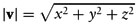This is for a zero-based vector in which the components are specified relative to the origin. The magnitude of a vector is equal to its length, as illustrated in Figure A-1. Figure A-1. Vector Length (Magnitude)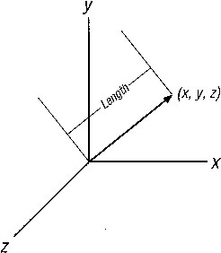Here's the code that calculates the vector magnitude for our Vector class:
inline float Vector::Magnitude(void)
{
return (float) sqrt(x*x + y*y + z*z);
}
Note that you can calculate the components of a vector if you know its length and direction angles. Direction angles are the angles between each coordinate axis and the vector, as shown in Figure A-2. Figure A-2. Direction Angles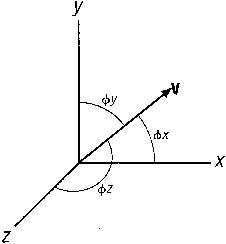The components of the vector shown in this figure are as follows: 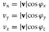The cosines of the direction angles seen in these equations are known as direction cosines. The sum of the squares of the direction cosines is always equal to 1: 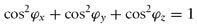NormalizeThe Normalize method normalizes the vector, or converts it to a unit vector satisfying the following equation: 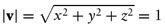In other words, the length of the normalized vector is 1 unit. If v is a nonunit vector with components x, y, and z, then the unit vector u can be calculated from v as follows: 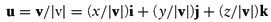Here, |v| is simply the magnitude, or length, of vector v as described earlier. Here's the code that converts our Vector class vector to a unit vector:
inline void Vector::Normalize(void)
{
float m = (float) sqrt(x*x + y*y + z*z);
if(m <= tol) m = 1;
x /= m;
y /= m;
z /= m;
if (fabs(x) < tol) x = 0.Of;
if (fabs(y) < tol) y = 0.Of;
if (fabs(z) < tol) z = 0.Of;
}
In this function tol is a float type tolerance, for example,
float const tol = O.OOOlf;
ReverseThe Reverse method reverses the direction of the vector, which is accomplished by simply taking the negative of each component. After calling Reverse, the vector will point in a direction opposite to the direction in which it was pointing before Reverse was called.
inline void Vector::Reverse(void)
{
x = -x;
y = -y;
z = -z;
}
This operation is illustrated in Figure A-3. Figure A-3. Vector Reversal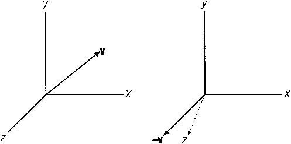Vector Addition: The += OperatorThis summation operator is used for vector addition, whereby the passed vector is added to the current vector component by component. Graphically, vectors are added in tip-to-tail fashion as illustrated in Figure A-4. Figure A-4. Vector Addition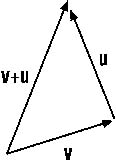Here's the code that adds the vector u to our Vector class vector:
inline Vector& Vector::operator+= (Vector u)
{
x += u.x;
Y += u.y;
z += u.z;
return *this;
}
Vector Subtraction: The -= OperatorThis subtraction operator is used to subtract the passed vector from the current one, which is performed on a component-by-component basis. Vector subtraction is very similar to vector addition except that you take the reverse of the second vector and add it to the first as illustrated in Figure A-5. Figure A-5. Vector Subtraction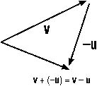Here's the code that subtracts vector u from our Vector class vector:
inline Vector& Vector::operator-=(Vector u)
{
x -= u.x;
y -= u.y;
z -= u.z;
return *this;
}
Scalar Multiplication: The *= OperatorThis is the scalar multiplication operator that's used to multiply a vector by a scalar, effectively scaling the vector's length. When you multiply a vector by a scalar, you simply multiply each vector component by the scalar quantity to obtain the new vector. The new vector points in the same direction as the unsealed one, but its length will be different (unless the scale factor is 1). This is illustrated in Figure A-6. Figure A-6. Scalar Multiplication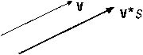Here's the code that scales our Vector class vector:
inline Vector& Vector::operator*=(float s)
{
x *=s;
y *=s;
z *=s;
return *this;
}
Scalar Division: The /= OperatorThis scalar division operator is similar to the scalar multiplication operator except that each vector component is divided by the passed scalar quantity.
inline Vector& Vector::operator/=(float s)
{
x /=s;
y /=s;
z /=s;
return *this;
}
Conjugate: The - OperatorThe conjugate operator simply takes the negative of each vector component and can be used when subtracting one vector from another or for reversing the direction of the vector. Applying the conjugate operator is the same as reversing a vector, as discussed earlier.
inline Vector Vector::operator-(void)
{
return Vector(-x, -y, -z);
}
|
|
|
< Day Day Up > |
|